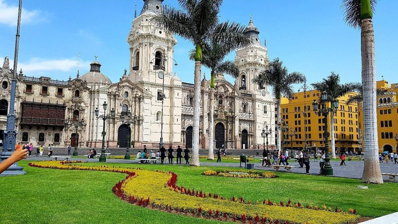
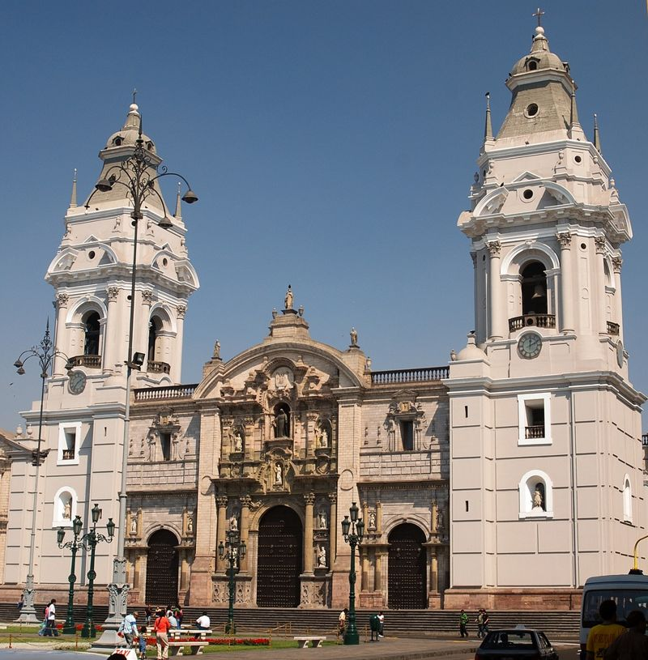
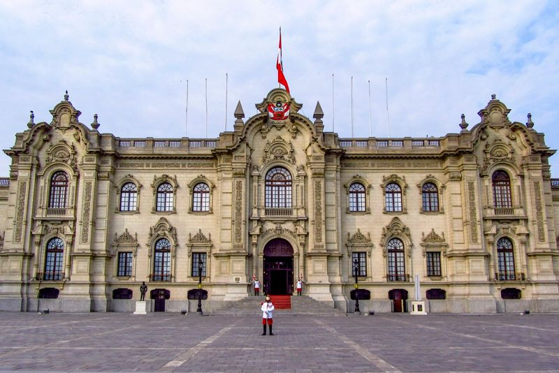
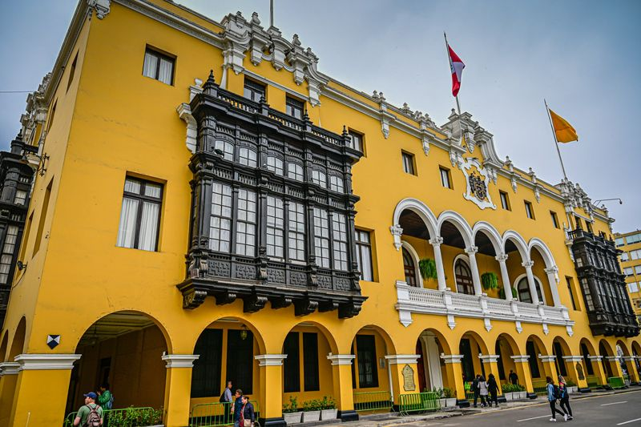
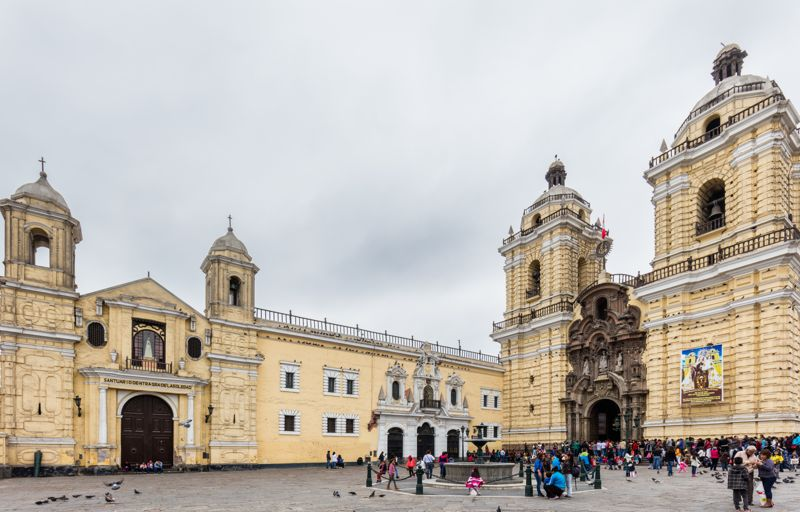
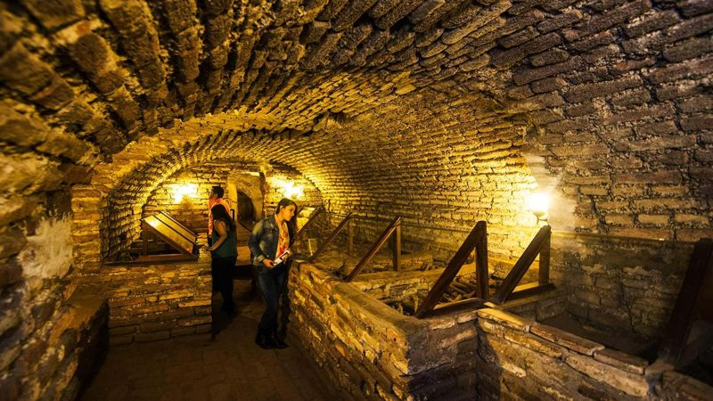
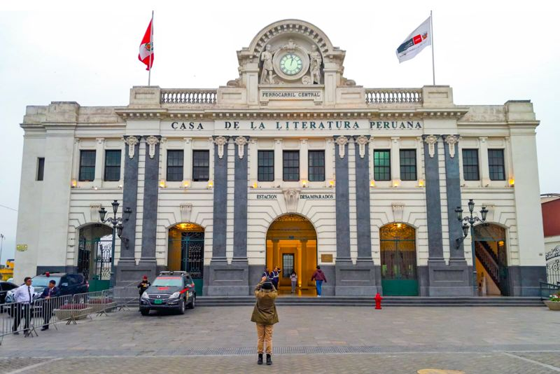
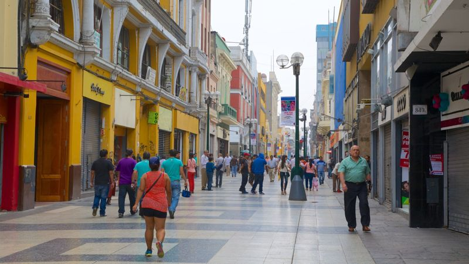

Lima · Patrimonio histórico
Plaza Mayor de Lima
Plaza fundacional de Lima, de 1535, rodeada por la Catedral, el Palacio de Gobierno y el Palacio Municipal.
Conoce Lima · Patrimonio y experiencias
Patrimonio, cultura, naturaleza y lugares para descubrir en Lima Metropolitana.

Encuentra tu próximo plan
Sumérgete en la historia y la cultura limeña. Utiliza los filtros para descubrir los espacios imperdibles de la ciudad.
Lima · Patrimonio histórico
Plaza fundacional de Lima, de 1535, rodeada por la Catedral, el Palacio de Gobierno y el Palacio Municipal.

Lima · Patrimonio histórico
Catedral frente a la Plaza Mayor: alberga un museo de arte religioso y el mausoleo atribuido a Francisco Pizarro.

Lima · Patrimonio histórico
Sede y residencia del presidente del Perú, en la Plaza Mayor; destaca por su fachada y su cambio de guardia.

Lima · Patrimonio histórico
Sede de la Municipalidad de Lima, en la Plaza Mayor: edificio neocolonial de 1944 con balcones de madera.

Lima · Patrimonio histórico
Conjunto barroco con claustros y biblioteca antigua, cuya construcción empezó en 1546; bajo el templo están las catacumbas.

Lima · Museo / espacio cultural
Osarios bajo el convento de San Francisco con restos de unas 25.000 personas; hoy funcionan como museo.

Lima · Patrimonio histórico
Convento de 1535 donde reposan Santa Rosa de Lima, San Martín de Porres y San Juan Macías; destaca su campanario.

Lima · Museo / espacio cultural
Antigua estación de Desamparados (1912), hoy espacio cultural con biblioteca y sala de lectura dedicado a la literatura peruana.

Lima · Patrimonio histórico
Calle peatonal del Centro Histórico que une la Plaza Mayor con la Plaza San Martín, con tiendas, cafés y arquitectura de época.